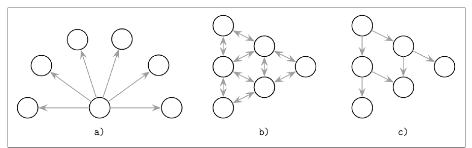
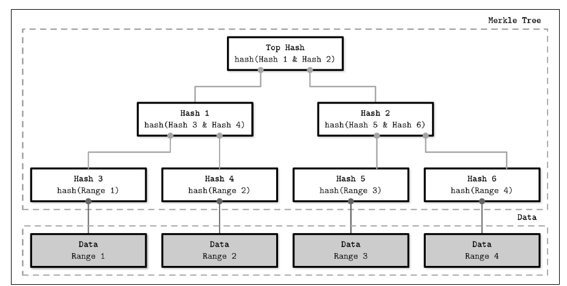
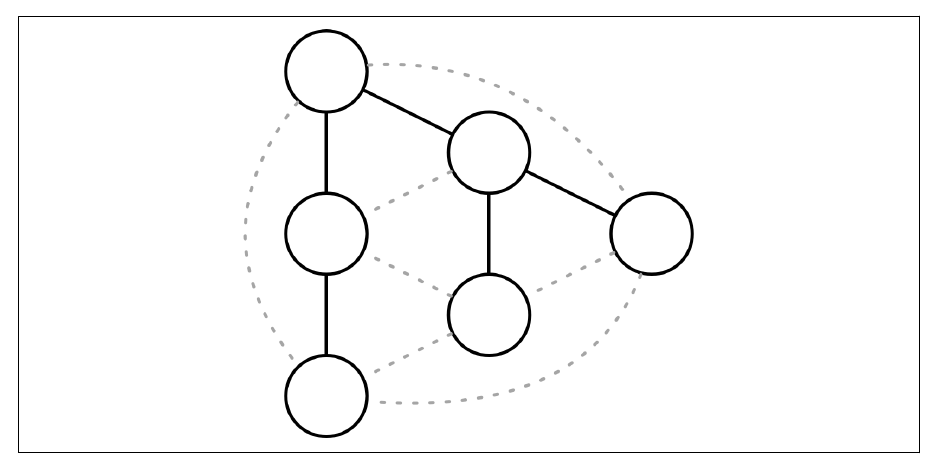

فصل ۱۲ · صص. ۲۴۳–۲۵۶
anti-entropy و پخش
Anti-Entropy and Dissemination
Database Internals, 1st Edition
پیامرسانی همتابههمتا و coordinatorبهreplica به available بودن فرستنده وابسته است، و throughputاش به یک ماشین حد خورده (ص. ۲۴۳). metadata clusterسراسری باید زود و قابل اطمینان پخش شود: عضویت، یعنی پیوستن و رفتن نودها، و حالت نودها و شکستها و تغییرهای schema. چنین پیامهایی کوچک و کمتکرارند (ص. ۲۴۳). دمرس و همکاران سه راه برای پخششان وصف میکنند (شکل ۱۲-۱، صص. ۲۴۳–۲۴۴):
| رویکرد | چطور |
|---|---|
| پخش فراگیر | یک process به همهی بقیه خبر میدهد |
| anti-entropy | همتاها دورهای دوبهدو اطلاع رد و بدل میکنند |
| gossip | گیرندهها همکارانه دوباره پخش میکنند |
اینجا انتروپی یعنی حالت نودها چقدر واگرا شده. anti-entropy وقتی تحویل اصلی باز مانده نودها را دوباره همگام میکند، که در سیستمهای سازگار غایی همگرایی را کوتاه میکند (ص. ۲۴۴). فصل مکانیزمهای پیشزمینه، یعنی read repair با خواندن digest و hinted handoff با quorumهای شلخته، و پسزمینه، یعنی درخت Merkle و بردار نسخهی bitmapی، را میپوشاند (صص. ۲۴۵–۲۴۹). بعد به gossip میچرخد: مدل همهگیری و fanout و redundancy و latency و از دست دادن علاقه، بهعلاوهی شبکههای روپوش و gossip دوگانهی Plumtree و نماهای جزئی HyParView (صص. ۲۵۰–۲۵۵).
فهرست خود فصل (از فهرست مطالب کتاب)
- بخش read repair — ص. ۲۴۵
- خواندن digest — ص. ۲۴۶
- بخش hinted handoff — ص. ۲۴۶
- درخت Merkle — ص. ۲۴۷
- بردار نسخهی bitmapی — ص. ۲۴۸
- پخش با gossip — ص. ۲۵۰
- مکانیک gossip — ص. ۲۵۱
- شبکهی روپوش — ص. ۲۵۱
- بخش gossip دوگانه — ص. ۲۵۳
- نمای جزئی — ص. ۲۵۴
- خلاصه — ص. ۲۵۵
از کتاب
مقدمه
پخش فراگیر به clusterهای کوچک میخورد. در بزرگها گران میشود، چون نودها زیادند، و نامطمئن، چون به یک process وابسته است که میتواند هر نودی را نشناسد و باید همهنگام با هر گیرندهای سرپا باشد (ص. ۲۴۴). شل کردن این نیازمندی یعنی coordinator به همهی موجودها تحویل میدهد، و anti-entropy بقیه را درست میکند (ص. ۲۴۴).


| anti-entropy | چه چیزی به کار میبرد | نمونهها (ص. ۲۴۴) |
|---|---|---|
| پیشزمینه | سوار درخواستهای خواندن یا نوشتن میشود | hinted handoff و read repair |
| پسزمینه | ساختارهای کمکی که واگرایی را شناسایی میکنند | درخت Merkle و log بهروزرسانی |
مقایسهی دوبهدوی کل replicaها یعنی خواندن کل مجموعهداده روی هر دو نود، که خیلی گران است. بهصرفه است که در نظر بگیریم replicaها چطور عقب میافتند و داده چطور دسترسی میشود (صص. ۲۴۴–۲۴۵).
از کتاب
read repair
واگرایی را سر خواندنی راحتتر از همه میشود تشخیص داد، و تنها برای دادهی خواستهشده (ص. ۲۴۵). آن coordinator از replicaها میخواند، و خوشبینانه فرض میگیرد همگاماند. اگر پاسخهایشان فرق داشته باشد، بهروزرسانیهای گمشده را به آن replicaهایی میفرستد که ندارندشان، از Dynamo (ص. ۲۴۵). دیتابیسهای از جنس Dynamo با consistency قابل تنظیم تنها به آنقدر replica تماس میگیرند و تعمیرشان میکنند که سطح consistency لازم دارد، پس نتیجههای quorum سازگارند هرچند برخی replicaها میتوانند باز هم نوشتنهایی را نداشته باشند (ص. ۲۴۵).
| حالت | رفتار (ص. ۲۴۵) |
|---|---|
| بندآور | کلاینت تا تعمیر شدن replicaها منتظر میماند. برای خواندنهای quorum خواندن یکنوا میدهد؛ availability خرج دارد، چون تعمیرها باید تأیید شوند |
| asynchronous | تعمیر را پس از پاسخ دادن زمانبندی میکند |
سیستم Cassandra iteratorهایی با شنوندهی merge به کار میبرد تا تفاوت میان نتیجهی mergeشده و ورودی هر replicaیی را حساب کند (ص. ۲۴۵). روش read repair فرض میگیرد که replicaها بیشتر همگاماند، پس تعمیرهای بندآور باید کمیاب باشند (ص. ۲۴۶).
read repair
خواندن digest
آن coordinator یک خواندن کامل و درخواستهای digest را به بقیهی replicaها میفرستد. digest یک hash از نتیجهی محلی replica است (ص. ۲۴۶). اگر همهی digestها با hash آن خواندن کامل بخوانند، replicaها همگاماند. اگر نه، coordinator نمیداند کی جلوتر است، پس به replicaهای نخوان خواندن کامل میدهد، آشتی میدهد، و عقبماندهها را بهروز (ص. ۲۴۶). digestها hashهای سریع و ناـرمزنگاری به کار میبرند؛ کتاب MD5 را میآورد. برخورد ناچیز است، و هر طور که باشد مکانیزمهای دیگر anti-entropy میگیرندش (ص. ۲۴۶).
از کتاب
hinted handoff
روش hinted handoff تعمیری سمت نوشتن است، از Dynamo. اگر نود هدف نوشتنی را تأیید نکند، coordinator یا replicaیی دیگر یک hint ذخیره میکند و همین که هدف برگردد replayش میکند (ص. ۲۴۶). در Cassandra، نوشتنهای hintخورده به ضریب replication حساب نمیشوند، چون log مربوط به hint خواندنی نیست، مگر سطح consistency ANY باشد (ص. ۲۴۶).
همهی quorumهای شلخته در Riak: وقتی replicaها بشکنند، نوشتنها میتوانند نودهای سالم دیگری به کار ببرند (صص. ۲۴۶–۲۴۷).
flowchart LR
W["write to replicas {A, B, C}"] --> A["A ✓"]
W -.->|"B down"| B["B ✗"]
W --> C["C ✓"]
W --> D["D ✓ (hint: for B)"]
D -. "B recovers → replay hint, then drop it" .-> Bنمودار vault از نمونهی پنجنودی {A, B, C, D, E} در ص. ۲۴۷.
گیرش: اگر {B, C} پارتیشن شوند و نوشتنی با quorum شلخته به {A, D, E} برود، خواندنی فوری از {B, C} از قلمش میاندازد. quorumهای شلخته consistency را با availability بدهبستان میکنند (ص. ۲۴۷).
از کتاب
درخت Merkle
روش read repair نمیتواند دادهای را که خوانده نمیشود درست کند، و مقایسهی دوبهدوی رکوردها ناعملی است (ص. ۲۴۷). درختهای Merkle درختی جمعوجور از hash میسازند: برگها بازههایی از رکورد را hash میکنند که با اسکن کردن جدول پیدا شدهاند، و هر پدری فرزندهایش را hash (شکل ۱۲-۲) (صص. ۲۴۷–۲۴۸).


- اگر ریشهها بخوانند، replicaها همگاماند. وگرنه از بالا به پایین مقایسه کنید تا بازههای متفاوت پیدا شوند، و زیردرختها را سطحبهسطح یا کل درختها را رد و بدل (صص. ۲۴۷–۲۴۸).
- تغییر دادهای زیردرخت بالایش را دوباره حساب میکند (ص. ۲۴۸).
- اندازهی درخت، یعنی اندازهی پیام، با دقت، یعنی اندازهی بازه، بدهبستان میشود (ص. ۲۴۸).
replicaهای ClickHouse با anti-entropy همگرا نمیشوند، با یک log مشترک در Keeper.
?نوبت شما · یک replica چند ساعت down بوده. وقتی برمیگردد چطور دادهی جاافتاده را میگیرد؟دیدن پاسخ
replication queue خودش را از Keeper میخواند و partهای جاافتاده را از replica دیگر fetch میکند. این بیشتر شبیه log replication است تا read repair یا درخت Merkle، که کتاب برای سیستمهای بی leader و بی log مشترک میآورد (صص. ۲۴۵–۲۴۸).
امتحان کنید
تعمیر با درخت Merkle
باز کردن در صفحهی کامل ↗ · این شبیهسازی مدل خود vault از سازوکاری است که کتاب شرح میدهد.
از کتاب
بردار نسخهی bitmapی
گونسالوس و همکاران: هر نودی logی بهتفکیک همتا از عملیاتی نگه میدارد که اجرا یا گرفته. در anti-entropy، logها مقایسه میشوند و دادهی گمشده تکرار (ص. ۲۴۸).
- هر نوشتنی یک نقطهی (i, n) است: نوشتن i*ام که نود *n همآهنگش کرده، با i که از ۱ شروع میشود (ص. ۲۴۸).
- ساعت منطقی نودی همان مجموعهی نقطههایی است که دیده، مستقیم یا ترایا. نقطههای خودش شکافی ندارند؛ و شکاف در نقطههای نودهای دیگر نوشتنهای گمشدهاند (صص. ۲۴۸–۲۴۹).
- نودها ساعتها را رد و بدل میکنند، نقطههای گمشده را شناسایی و رکوردهایشان را تکرار. یک ظرف علّی نقطهدار، یعنی DCC، نقطهها را به اطلاع علّی برای هر کلیدی map میکند، تا حل تعارض علیت را نگه دارد (ص. ۲۴۹).
- شکل جمعوجور: نود ← (آخرین index پیاپی، bitmap نقطههای بعدی). نمونهی کتاب، یعنی (3, 01101₂)، یعنی «پیاپی تا ۳، و همچنین ۵ و ۶ و ۸ دیده شدهاند» (شکل ۱۲-۳، ص. ۲۴۹).
- همین که هر نودی هر چیزی را تا i دیده باشد، بردارها تا i بریده میشوند (ص. ۲۴۹).
| خوبی (ص. ۲۴۹) | بدی (ص. ۲۴۹) |
|---|---|
| علیت را میگیرد و دقیقاً نوشتنهای گمشده را انگشت میگذارد | نودی که مدت طولانی خواب باشد بریدن را بند میآورد، چون همتاها باید دادهی گمشدهاش را نگه دارند |
از کتاب
پخش با gossip
پروتکل gossip گسترهی پخش فراگیر را با قابلیت اطمینان anti-entropy ترکیب میکند. احتمالاتی است، و از پخش شدن شایعه و همهگیری مدل گرفته (ص. ۲۵۰). فصل با سرلوحهای از کارل یونگ دربارهی همهگیریهای روانی باز میشود (ص. ۲۵۰).
stateDiagram-v2
[*] --> Susceptible
Susceptible --> Infective: receives update
Infective --> Infective: push to random peers
Infective --> Removed: loss of interestحالتهای همهگیری از دمرس و همکاران در ص. ۲۵۰.
- همهی processهای واگیر بهروزرسانیای دارند و پخشش میکنند. مستعدها نگرفتهاندش. برداشتهها پخش کردنش را بس کردهاند (ص. ۲۵۰).
- تمامیت بهجای فهرستی جهانی از گیرنده با یک تابع از دست دادن علاقه مدل میشود. کارایی یعنی واگیر کردن تا جای ممکن نود بیشتر با تا جای ممکن پیام زائد کمتر (ص. ۲۵۰).
- پروتکل gossip به سیستمهای همگن و نامرکزی بی عضویت یا توپولوژی بلندمدت و به عضویت انعطافپذیر و شبکههای مش میخورد. خیلی استوار است: replayکنندههای تصادفی گرد شکستها مسیرهای جانشین پیدا میکنند (ص. ۲۵۰).
پخش با gossip
مکانیک gossip
| اصطلاح | معنا (ص. ۲۵۱) |
|---|---|
| fanout یعنی f | شمار همتاهای تصادفی که در هر دوری تماس گرفته میشوند |
| redundancy | سرریز تحویلهای تکراری؛ ذاتی و لازم است |
| latency | زمان همگرا شدن، یعنی بس شدن gossip، که کمی از تحویل به همه بلندتر است |
| از دست دادن علاقه | احتمالاتی، یعنی با احتمالی در هر قدمی بس کن، یا با آستانه، یعنی پس از تکراریهای زیادی بس کن. شمردن تکراریها latency را بهتر و redundancy را کم میکند |
سیستمهای بزرگتر fanout بزرگتر لازم دارند یا باید latency بالاتری را بپذیرند (ص. ۲۵۱). gossip consistency همگرا میدهد: احتمال توافق نودها دربارهی رویدادهای دورتر در گذشته بیشتر است (ص. ۲۵۱).
امتحان کنید
پخش با gossip
باز کردن در صفحهی کامل ↗ · این شبیهسازی مدل خود vault از سازوکاری است که کتاب شرح میدهد.
پخش با gossip
شبکهی روپوش
پروتکل gossip به مجموعهی تنگی از مسئلهها به کار بسته میشود. رویکردهای ناهمهگیری با قطعیت و با redundancy کمتر تحویل میدهند (ص. ۲۵۱). gossip پیامی را در تقریباً log N دور پخش میکند ولی بهایش را با تکراری میدهد، و برداشتن تصادفی همتا استوار است چون پیوندهای غیرمستقیم گرد پارتیشنها میپیچند، هرچند پیامبهینه نیست (صص. ۲۵۱–۲۵۲).
میانهی راه توپولوژی ثابت موقت است: نودها از همتاها نمونه میگیرند و بهترین تماسها را بر حسب نزدیکی، یعنی تأخیر، برمیدارند، و درختهای پوشا میسازند، یعنی گرافهایی بیحلقه که شبکه را میپوشانند، پس تحویل شمار ثابتی قدم میبرد (ص. ۲۵۲). در شکل ۱۲-۴، اتصال کامل تنها برخی یالها را لازم دارد، ولی یک پیوند شکسته کل زیردرختی را میبرد (ص. ۲۵۲). درختهای پوشا میتوانند جزیرههایی از همتاها هم بسازند که هم را ترجیح میدهند. در حالت پایدار درخت به کار ببرید و برای failover و بازیابی gossip (ص. ۲۵۲).
پخش با gossip
پروتکل gossip دوگانه
الگوریتم Plumtree، یعنی درختهای multicast با push و push تنبل، از لیتائو و همکاران (صص. ۲۵۳–۲۵۴):
- الگوی push مشتاق: پیامهای کامل روی درختی پوشا به زیرمجموعهی کوچکی از همتاها میروند.
- الگوی push تنبل: تنها ID پیام به بقیه میرود. نودی که IDیی ناشناس ببیند آن پیام را میخواهد، که درخت را هم ترمیم میکند.
- سر شکست پروتکل از راه پیوندهای تنبل به gossip برمیگردد و آن روپوش را تعمیر (شکل ۱۲-۵).


- زیر بار پیوسته آن درخت گرایش دارد latency را کمینه کند، چون نخستین نودهایی که پاسخ میدهند به آن میپیوندند (صص. ۲۵۳–۲۵۴).
پخش با gossip
نمای جزئی
نماهای عضویت کامل زیر تلاطم بالا، یعنی پیوستن و رفتن نودها، گراناند، پس یک سرویس نمونهگیری همتا یک نمای جزئی نگه میدارد که با gossip تازه میشود، با کمی همپوشانی برای redundancy (ص. ۲۵۴). روش HyParView از لیتائو و همکاران یک نمای فعال کوچک برای پخش و یک نمای غیرفعال بزرگتر از نامزدهای جانشینی نگه میدارد (ص. ۲۵۴).
- نودها دورهای بر هم میزنند، نماها را رد و بدل میکنند و اعضای گرفتهشده را به نمای غیرفعالشان میافزایند، و در همان حال قدیمیترین entryها را میاندازند تا اندازه سقفدار بماند (ص. ۲۵۴).
- اگر P1 در نمای فعالش به P2 گمان ببرد، P2 را با P3 از نمای غیرفعالش عوض میکند، و P3 را میاندازد اگر اتصال باز بماند. process P3 میتواند رد کند اگر نمای فعالش پر باشد، مگر نمای P1 خالی باشد، که آنوقت P3 باید قبول کند و کسی را بیرون بیندازد. این میگذارد نودهای در حال راه افتادن زود بپیوندند (ص. ۲۵۴).
- روش HyParView پس از سازمان دوباره زود به روپوشی پایدار همگرا میشود، تا حدی چون processهای در حال راه افتادن را اولویت میدهد (ص. ۲۵۴).
نه Plumtree و نه HyParView نمایی جهانی از همهی همتاها لازم ندارند (صص. ۲۵۴–۲۵۵).
Alertmanager در حالت HA با gossip وضعیت silenceها و notificationها را بین نمونهها پخش میکند.
?نوبت شما · دو نمونهی Alertmanager دارید و یک alert دو بار به کانال تیم میرسد. چه چیزی شکسته است؟دیدن پاسخ
احتمالاً gossip بین دو نمونه، مثلاً port cluster بسته است، پس هیچکدام نمیداند دیگری notification را فرستاده. gossip سریع ولی احتمالاتی پخش میکند و به شبکهی سالم بین اعضا نیاز دارد (صص. ۲۵۰–۲۵۵).
از کتاب
خلاصه
| مکانیزم | برای چه بهینه است (ص. ۲۵۵) | چه میکند |
|---|---|---|
| read repair | کم کردن گستره | آن چیزی را که خوانده میشود آشتی میدهد |
| hinted handoff | کم کردن گستره | نوشتنهای از قلم افتاده را یکییکی replay میکند |
| بردار نسخهی bitmapی | تازگی | رویدادهای واگرای تازه را log میکند؛ پس از شکستی کوتاه دقیقاً میداند چه چیزی را همگام کند |
| درخت Merkle | تمامیت | کل مجموعهدادهها را با hash ارزان مقایسه میکند |
پروتکل gossip اطلاع را در مقیاس قابل اطمینان پخش میکند، و gossip دوگانه پیام را میبرد و در همان حال پارتیشنمقاوم میماند (ص. ۲۵۵). خیلی از سیستمها gossip را برای تشخیص شکست و عضویت به کار میبرند. روش HyParView در Partisan به کار میرود، و Plumtree در Riak core برای اطلاع clusterسراسری به کار میرفت (صص. ۲۵۵–۲۵۶).
مرور
بدهبستانها در یک نگاه
| read repair | hinted handoff | درخت Merkle | بردار نسخهی bitmapی | |
|---|---|---|---|---|
| برانگیزنده | خواندن | نوشتنهای شکسته | پسزمینه | پسزمینه |
| دادهی سرد را میپوشاند | ✗ | تنها نوشتنهای از قلم افتاده | ✓ | ✓ برای تازهها |
| هزینه | خواندن اضافهی replica؛ بندآور latency میافزاید | ذخیرهی hint | اسکن کامل برای ساختن؛ hash | logهای بهتفکیک همتا؛ بریدن با شکستهای طولانی بند میآید |
| پخش | پیام | قابلیت اطمینان | latency |
|---|---|---|---|
| پخش فراگیر | N − 1 از یک نود | نقطهی شکست تنها | یک پرش |
| gossip | زائد، تقریباً N·f در هر دوری | خیلی بالا | حدود log N دور |
| درخت پوشا | N − 1 | یک پیوند میتواند زیردرختی را ببرد | عمق درخت |
| Plumtree | درخت بهعلاوهی IDهای تنبل | بالا، چون خودتعمیر است | نزدیک عمق درخت |
مرور
نکتههای کلیدی
- تحویل در دو قدم رخ میدهد: تحویل اصلی با بهترین تلاش، بعد synchronization دورهای. مسئولیت مشترک است، پس اگر coordinator بشکند سیستم همینطور کار میکند (ص. ۲۴۴).
- عمل read repair تنها آن چیزی را درست میکند که خوانده میشود. read repair بندآور به خواندنهای quorum یکنوایی میدهد به بهای دسترسپذیری؛ و تعمیر asynchronous منتظر نمیماند (ص. ۲۴۵).
- خواندنهای digest یک خواندن کامل و hash از بقیهی replicaها میفرستند. خواندن کامل تنها وقتی پی میآید که digestها نخوانند (ص. ۲۴۶).
- مفهوم hint، replica نیست. در Cassandra، نوشتنهای hintخورده به ضریب replication حساب نمیشوند مگر سطح consistency
ANYباشد. quorumهای شلخته availability را به بهای consistency بهتر میکنند (صص. ۲۴۶–۲۴۷). - درختهای Merkle واگرایی را محلی میکنند. ریشهها را مقایسه کنید، بعد به زیردرختهای متفاوت پایین بروید. بازههای برگ کوچکتر دقیقترند ولی درخت را بزرگتر میکنند (صص. ۲۴۷–۲۴۸).
- بردارهای نسخهی bitmapی نوشتنهای گمشده را بهشکل نقطهی (i, n) انگشت میگذارند، ولی نودی که مدت طولانی خواب بماند جلو بریدن log همتاها را میگیرد (صص. ۲۴۸–۲۴۹).
- پروتکل gossip در تقریباً log N دور به همه میرسد، و بهای استواری را با پیامهای زائد میدهد. از دست دادن علاقه تصمیم میگیرد پخش شدن کِی بس شود (صص. ۲۵۰–۲۵۱).
- پروتکل gossip دوگانه در حالت پایدار درختی پوشا و ارزان به کار میبرد و برای تعمیر به gossip برمیگردد، یعنی Plumtree و HyParView (صص. ۲۵۲–۲۵۵).
تمرین
خودتان را بسنجید
پرسشها و پاسخها مال vault است و از روی یادداشتهای بالا نوشته شده؛ پاسخها به صفحههای کتاب ارجاع میدهند.
۱تفاوت anti-entropy پیشزمینه و پسزمینه چیست؟دیدن پاسخ
مکانیزمهای پیشزمینه سوار درخواستهای کلاینت میشوند، یعنی read repair و hinted handoff. پسزمینهایها ساختارهای کمکی مثل درخت Merkle و log بهروزرسانی به کار میبرند تا واگرایی را مستقل از درخواستها پیدا کنند (ص. ۲۴۴).
۲چرا read repair بندآور به خواندنهای quorum یکنوایی میدهد؟دیدن پاسخ
خواندن تا تعمیر شدن replicaهای عقبمانده برنمیگردد، پس هر خواندن quorum بعدی دستکم همان مقداری را میبیند که همین حالا برگردانده شد (ص. ۲۴۵).
۴همهی replicaها {A, B, C} هستند و B خواب است. با quorum شلخته، نوشتن کجا میرود، و وقتی B برگردد چه میشود؟دیدن پاسخ
به A و C و جانشینی مثل D، که رکورد را با hintی برای B ذخیره میکند. وقتی B بازیابی شود، D آن hint را replay میکند و کپیاش را میاندازد (ص. ۲۴۷).
۵ریشهی Merkle دو replica فرق دارد. آن واگرایی چطور محلی میشود؟دیدن پاسخ
hashهای فرزند را از بالا به پایین مقایسه کنید و تنها به زیردرختهای نخوان پایین بروید تا به آن بازههای برگی برسید که فرق دارند، بعد آن رکوردها را تعمیر کنید (صص. ۲۴۷–۲۴۸).
۶عبارت (3, 01101₂) در بردار نسخهی bitmapی چه معنایی دارد؟دیدن پاسخ
آن نود نوشتنهای آن همتا را پیاپی تا ۳ دیده، و همچنین نوشتنهای ۵ و ۶ و ۸ را (ص. ۲۴۹).
۷در gossip، چه چیزی نودی را از واگیر به برداشته میبرد؟دیدن پاسخ
از دست دادن علاقه: یا احتمالی برای بس کردن در هر قدمی، یا تکراریهای زیادی که به آستانهای حساب میشوند (صص. ۲۵۰–۲۵۱).
۸روش Plumtree درخت پخشش را چطور تعمیر میکند؟دیدن پاسخ
نودها تنبل IDهای پیام را به همتاهای غیردرختی push میکنند. نودی که IDیی ببیند که ندارد آن پیام را میخواهد، و همان پیوند برای ترمیم درخت به کار میرود (ص. ۲۵۳).
مکمل
فراتر از کتاب
مکمل vault، نه از متن کتاب.
- پروتکل gossip با push و pull، یعنی رد و بدل digest در هر دو جهت، همین که بیشتر نودها واگیر شوند در O(log log N) دور همگرا میشود، در برابر O(log N) برای تنها push. gossiper در Cassandra هر ثانیه رد و بدلی سهپیامی از جنس SYN و ACK و ACK2 میکند. آزمایش gossip دورهای تنهاpush را در برابر برآورد log N اندازه میگیرد.
- تعمیر در Cassandra برای هر بازهی token درختی Merkle میسازد، با
nodetool repair. تعمیر افزایشی SSTableهای از قبل تعمیرشده را علامت میزند تا اجراهای بعدی تنها دادهی تازه را hash کنند، که هزینهی «اسکن کامل برای ساختن» در جدول بالا را کم میکند. - میراث Dynamo: روشهای read repair و hinted handoff و quorum شلخته و anti-entropy با درخت Merkle همه از مقالهی ۲۰۰۷ Dynamo میآیند که کتاب با [DECANDIA07] آوردش. فصل ۶ کتاب DDIA replication بیleader را از سمت برنامه میپوشاند.
قدمهای بعدی
ادامه بدهید
اجرا کنید
روش gossip چه تند به کل یک cluster میرسد، و چند پیام را هدر میدهد؟ از یک node که آغاز شود، هر nodeی که خبر را میداند در هر دور آن را به fanout همتای تصادفی push میکند. آزمایش دورها را تا وقتی همه بدانند، پیامهای هر گره، و سهم پیامهایی که به nodeهای از قبل دانا میرسند میشمارد. ۱۰۰ و ۱٬۰۰۰ و ۱۰٬۰۰۰ node را میپوشاند، میانگین ۲۰ اجرای با seed.
cd books/database-internals/lab/12-gossip-convergence
python3 gossip.pyپیوندها
- اجرا کنید: همگرایی gossip؛ gossip از جنس push را با چند fanout و اندازهی cluster شبیهسازی میکند، و دورهای لازم برای واگیری کامل و کل پیامها و redundancy را در مقایسه با log N گزارش میدهد.
- فصلهای مرتبط: فصل ۹: تشخیص شکست که تشخیص شکست از جنس gossip و SWIM را دارد، فصل ۱۱: replication و consistency که consistency قابل تنظیم و quorum و ساعت برداری را دارد، و فصل ۷: ذخیرهسازی log-structured که tombstone و دورهی مهلت GC را دارد.